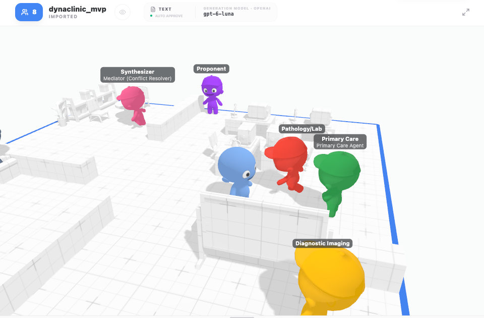

DynamiClinic
From a scoping review of 81 multi-agent studies to a system that switches its architecture per clinical case.
Reviewed by A/Prof. Arthur Tang and Dr. Linh Tran, School of Science, Engineering and Technology
branch threejs-devall
Starting point: how do teams of LLM agents work in healthcare?
Question
How are systems of two or more LLM agents that critique, debate or reach consensus built and evaluated in healthcare?
Inclusion rule
Genuine inter-agent conditioning: one agent's output is revised in response to another's. Not single-LLM tools, not fixed role chains without feedback.
Method
- 5 databases: PubMed, Scopus, CINAHL, Cochrane Library, IEEE Xplore
- Searched June 2026, records from 2022 to 2026
- Arksey and O'Malley five stages, reported per PRISMA-ScR
- Screening and full-text review in Covidence
- Every charted value backed by a verbatim quote from the source
529 records in, 81 studies out
457 - 308 = 149
149 - 67 = 82 records = 81 unique studies
Architecture is the design variable; cost and safety lag behind
architecture families
Debate and consensus 35, hierarchical coordinators 30, dynamic team assembly only 11. Families overlap.
the cost of collaboration
4-12x longer than single-modality tools (Wan 2025); 3.6x the tokens and time of baselines (Mandal 2025).
where failure lives
Collusion, unsafe content spreading across agents, and false consensus that silences a correct minority.
tested with people
Benchmarks (35) and retrospective data (22) dominate; no randomized trial. Call: compare against strong single-model baselines.
Each finding became a design requirement
A Meta-Controller makes the topology a variable
Two scores, one rule
Complexity C: how dense the case is (comorbidities, drugs, conflicting labs).
Uncertainty U: entropy of a generalist's first differential.
C <= tau_c → hierarchical
otherwise → collaborative
A Conflict Detector escalates collaborative to adversarial when the specialists diverge. tau_u is calibrated per model (gpt-6-luna: 0.15 multiple choice, 0.59 open-ended).
Primary Care Agent as the hub; specialists only on request.
Imaging, Pathology/Lab, Pharmacology on a shared Blackboard; mesh exchange; Consensus Builder.
Proponent defends H1, Opponent (Clinical Critic) attacks, Mediator decides.
Built as one workflow on the DevAll multi-agent platform
custom node types in one YAML workflow
evaluation arms: single, static team, dynamic
office: every agent a character showing its live role
automated tests, no model calls needed
Works end to end; not yet better than one agent
MedQA-USMLE, 50 test questions, gpt-6-luna
Accuracy with 95% interval, one run per arm.
| single | dynamic | static | |
|---|---|---|---|
| gpt-6-luna calls / question | 1.00 | 6.94 | 6.00 |
| gpt-6-luna mean latency | 5.3 s | 32.0 s | 29.9 s |
| qwen3.5-4b accuracy (local) | 68% | 60% | 62% |
Next: make the team earn its cost
Harder cases, mechanism by mechanism
A benchmark where one agent fails (MedXpertQA); ablate mesh, debate and gates one at a time.
A better controller
Validate tau against outcomes; give the first look a vote; a Mediator that weighs evidence, not plurality.
Toward clinical validation
Clinician review of debate transcripts, then the prospective studies the review found missing.

Live demo: one case per mode